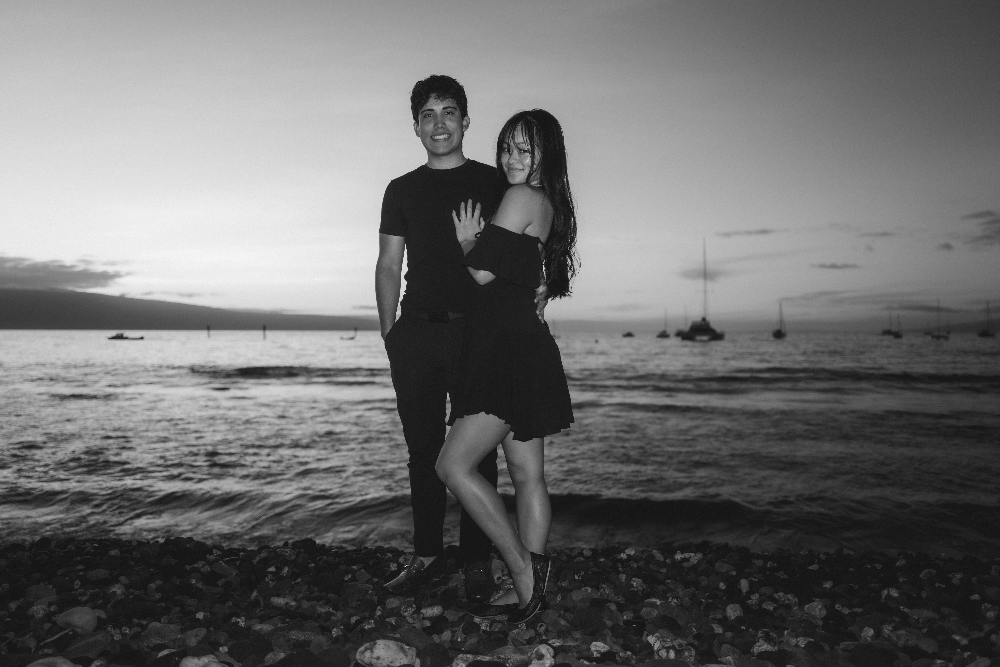

Solomon Balter
Photographer, Wailea Photo

A cinematic eye, shaped on Maui.
Solomon Balter is a second-generation Wailea Photo photographer, born and raised on Maui, known among the family team for a cinematic style. He learned the craft directly from his father, founder Laurence Balter, and alongside his mother Jude and brother Max.
Solomon photographs family portraits, couples sessions and weddings across Wailea, Makena and South Maui as part of the family-run Wailea Photo team.
Outside the family business, Solomon's personal automotive photography has been recognized internationally: his portfolio shoot of the McLaren Artura, staged on location in Monaco, was featured in BPM Exclusive Owners magazine.
View Sessions & Pricing"I look for the frame that feels like a scene from your story, not just a photo of it."
Local roots, cinematic style.
Solomon was raised on Maui and trained by his parents in the same approach that has defined Wailea Photo for more than 25 years, with an added focus on movement, atmosphere and cinematic composition.
Like every Wailea Photo session, Solomon's sessions are shot personally — never handed off to an outside contractor.